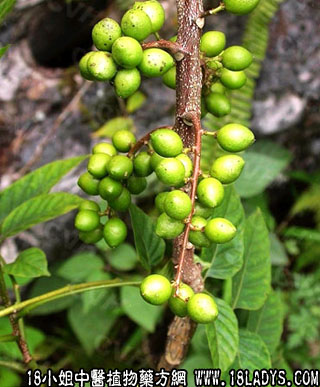

鸦胆子(中药材植物名:鸦胆子)(植物科目:苦木科)

别名：天胆子。
植物名：鸦胆子。
生长环境：本品为灌木或小乔木，生于山地灌木丛中或路旁。
分布：我国南部各地有分布，广州附近村庄旁常见，此外，亚洲热带各地亦有分布。
入药部分：子（去壳）。
采集期：秋、冬多。
自采地点：郊外山岗。
性味：性凉、味苦、有毒。
功能：止痢。
主治、用量和用法：痢疾，配伍用。
验方：（治痢疾中症方）鸦胆子肉1两去净油，乌梅肉1两，两味同捣烂为小丸，每次服3～5分，日服一次，或早晚各一次。
（方解）鸦胆子即苦参子，有治痢之功。此药有外壳，用时去壳取仁，仁有油，味极苦，能碍胃，得之者呕，故言其有毒，压去油则无此弊。本方用鸦胆子，压去油，取乌梅肉为赋形剂，制成小丸。治痢疾之音为因于热者良。
（方歌）挟热下痢势频危，鸭子乌梅捣成泥，搓成小丸早晚服，苦参解毒是良剂。
本文解释权归中药大全，本文地址：https://www.daquan.com/post/1595.html